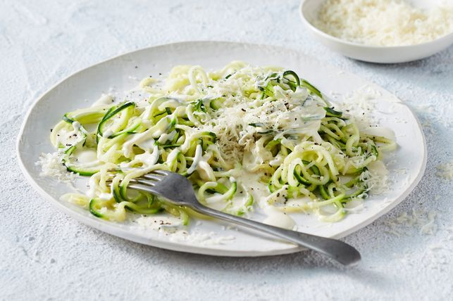

SPAGHETTI

DESCRIPTION
Today we are introducing you to the Keto SPAGHETTI, it taste the same as a typical spaghetti but it can be consumed within a low carb diet.
Ingredients
- olive oil
- garlic
- zuchinni noodles
- cream cheese
- parmesan
- Heat the oil and butter
- Add the zucchini noodles
- Use tongs to toss occasionally, for 1-2 minutes or until slightly wilted. Use tongs to transfer to a plate.
- Add the garlic to the pan.
- Add the cream cheese, cream and 60ml (1/4 cup) water. Reduce heat to low for 3 minutes or until mixture is smooth. Stir through the parmesan and season. Add the zucchini and use tongs to toss to combine. Serve with extra parmesan.